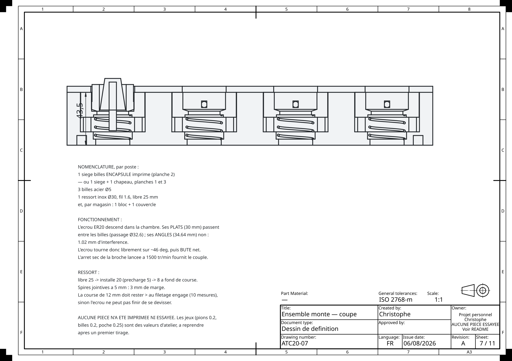
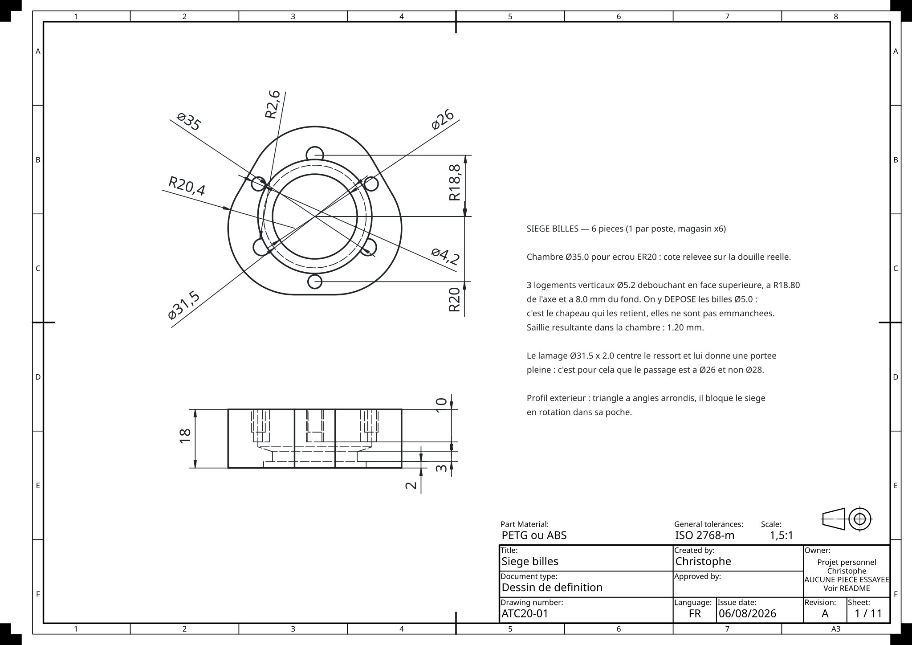
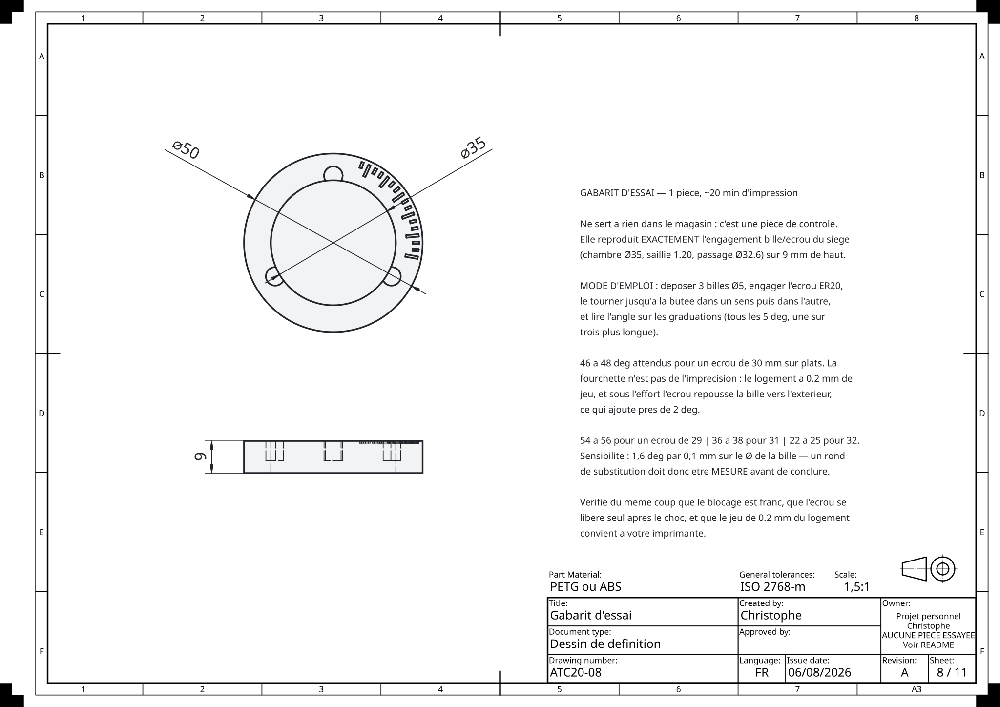

Cliquer n'importe où, ou Échap, pour fermer
Comment un changeur d'outil automatique tient sur une seule cote libre — et pourquoi elle vaut 1,20 mm.
Chaque poste tient un écrou ER20 — avec sa pince et son outil — suspendu dans une chambre Ø35, retenu par trois billes acier Ø5 qui font saillie de 1,20 mm.
L'écrou descend six-pans en avant. Ses plats passent entre les billes, ses angles non : il tourne librement d'un angle fini, puis bute net. La broche lancée à 1 500 tr/min s'arrête sec sur cette butée, et c'est cet arrêt qui fournit le couple de vissage ou de dévissage. Il n'y a pas d'autre moteur, pas de doigt, pas de vérin : toute la mécanique du changement d'outil tient dans ce contact.
De docs/note-de-calcul-ER20.pdf, huit pages engendrées depuis le
modèle : aucun chiffre n'y est recopié, un paramètre qui change dans le code
change dans le document. L'écrou, lui, a été mesuré au pied à coulisse — 22 mm
hors tout, dont 8 mm seulement de six-pans et 30 sur plats.
C'est le seul chiffre du mécanisme qui soit vraiment libre. Il n'est ni mesuré ni copié : il se déduit de deux impossibilités, et on le place dans ce qui reste.
Vue de dessus et à l'échelle, les trois rayons en jeu sont indiscernables — ils tiennent dans 2,5 mm. Il faut les déplier pour voir quoi que ce soit. Notons rb le rayon du cercle tangent intérieurement aux trois billes.
Première impossibilité. Si rb dépasse le rayon des angles, les angles passent entre les billes et plus rien ne bloque :
Seconde impossibilité. Si rb descend sous le rayon des plats, les plats ne passent plus et l'écrou n'entre même pas :
Reste une fenêtre de 2,32 mm, et toute la question est où s'y placer. Deux grandeurs s'y partagent la place, et elles s'opposent : le mordant sur les angles, s − 0,18, qui est ce qui retient ; et le jeu sur les plats, 2,50 − s, qui est ce qui laisse l'écrou entrer et tourner. Ce qu'on donne à l'un, on le retire à l'autre.
La raison est d'atelier, pas de calcul. Sur une pièce imprimée, la panne qu'on rencontre en premier est l'écrou qui n'entre pas ou ne tourne pas — la chambre ne lui laisse déjà que 0,18 mm au rayon. Le mordant, lui, se vérifie sur le gabarit d'essai avant d'imprimer quoi que ce soit ; un écrou qui n'entre pas, c'est une impression jetée.
| saillie s | mordant | jeu plats | |
|---|---|---|---|
| 0,18 | 0,00 | 2,32 | les angles passent : rien ne bloque |
| 0,50 | 0,32 | 2,00 | |
| 1,20 | 1,02 | 1,30 | retenu |
| 1,34 | 1,16 | 1,16 | partage exact |
| 1,50 | 1,32 | 1,00 | |
| 2,00 | 1,82 | 0,50 | |
| 2,50 | 2,32 | 0,00 | les plats ne passent plus |
L'écrou tourne jusqu'à ce qu'un angle vienne toucher une bille. L'angle libre se lit sur la position où la distance de l'axe au plat atteint rb :
Cette lecture d'angle bouge de 1,6 degré par dixième de millimètre de diamètre de bille. Un substitut de diamètre inconnu — un rond quelconque, une queue de foret — rend la mesure inexploitable sur le gabarit d'essai.
La bille doit toucher l'écrou sur sa partie à six faces, et nulle part ailleurs. Trop haut elle tombe sur la partie ronde ; trop bas, sur le chanfrein de pied. Ni l'une ni l'autre ne retient quoi que ce soit.
Premier point contre-intuitif : la bille ne touche jamais le plat en son milieu. Son point intérieur est à 16,30 de l'axe, le plat à 15,0 en son milieu mais à 17,32 à ses extrémités. La bille passe donc au large du milieu et vient rencontrer le plat près de son extrémité, à 2,28 mm de l'arête. L'arête elle-même reste à 2,644 mm du centre de la bille alors qu'il en faudrait 2,500 pour toucher : elle ne touche pas.
Second point, celui qui fixe la hauteur : ce plat est une surface verticale. Une sphère qui touche un plan vertical le touche à la hauteur de son centre, en un seul point. Ce n'est donc pas toute la silhouette de la bille qui porte, mais son équateur.
Le six-pans fait 8 mm, 11 en comptant le chanfrein du haut. Mais au-delà des 8 mm, ce chanfrein rogne les angles et l'interférence tombe à zéro : plus rien ne bloque. C'est la contrainte la plus serrée de tout le projet, et elle est restée invisible tant que la hauteur du six-pans — puis son chanfrein de pied — n'avaient pas été mesurés.
L'arête de l'angle est chanfreinée en pied sur 1,50 mm. Elle n'est donc à plein rayon que de 1,5 à 8,0 mm : 6,50 mm d'arête utile, et non 8. Sans ce terme, le modèle se trompait de 1,50 mm sur toute la chaîne verticale — écart retrouvé par deux mesures indépendantes sur pièce imprimée.
Les plans sortent de TechDraw, et leurs cotes sont lues directement sur le modèle : 74 cotes vérifiées à chaque régénération. Cliquer pour agrandir.



Le magasin est modélisé d'après la demande de brevet US 2024/0278368 A1 (Greilick Industries LLC, publiée le 22/08/2024, statut « pending » — une demande en instance, pas un brevet délivré). Cette page explique des calculs et montre des plans ; elle ne diffuse ni modèle 3D, ni STL. Les macros du changeur d'outil LinuxCNC, elles, portent la logique des macros RapidChange ATC de Greilick, sous GPL-3.0, et sont dans la config PrintNC.